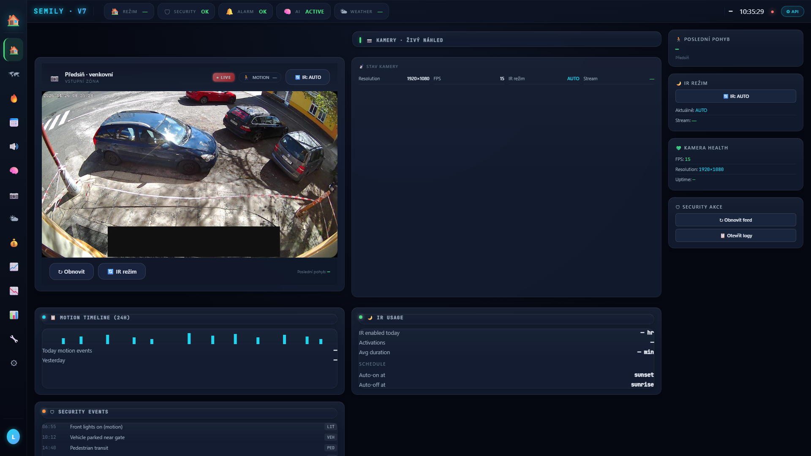

Otevřené okno
Door/window contact na okně otevře → flow vypne čističku vzduchu (zbytečné filtrovat venkovní). Po zavření obnoví. Reálný incident 26.4. — UUID change po re-pairu, 3 flows broken, čistička se nezapínala.
🏠 Prožívání · Bezpečnost a kamery
Senzory na oknech a dveřích, multi-zone motion detection, away/home stavová logika a meta-vrstva Brain Guardian, která hlídá, jestli se dům chová jak má. Cíl není alarm na každý vrabec za oknem — cíl je vědět, když něco není v pořádku, a sám to napravit, kde to jde.
Co to dělá
Vrstva 1 — fyzické senzory: door/window kontakty na klíčových oknech, PIR motion v kuchyni, mmWave presence ve open space, motion v koupelně. Každý senzor má capability v Homey a vlastní flow trigger. Nic exotického, jen klasická detekce.
Vrstva 2 — stavová logika: away/home preset přepíná chování celého domu. Geofence detekuje výjezd, presence skripty potvrdí, a všechny zóny se přepnou — topení na 16 °C, světla blokovaná, případně čistička reaguje na otevřené okno.
Vrstva 3 — Brain Guardian: meta-supervisor 5-skriptový modul, který sleduje, jestli stav domu odpovídá očekávání. Hlídá stuck priority gates, kotel běžící přes 4 h, dlouhodobě neaktualizované senzory, ghost state proměnné.

Denní provoz
Většinu času pasivní. Reaguje teprve, když se stav zásadně změní.
Senzory loggují aktivitu, motion → světla, presence → audio kontext. Žádné push notifikace, žádné alerty. Brain Guardian běží jednou za 15 min, kontroluje konzistenci.
Geofence detekuje výjezd → preset = away → topení 16 °C, světla blokovaná,
případně robot vysavač spustí. Stav sh_rezim_doma='pryc' gate
všech zóny — light_router odmítne, audio brain ztichne.
Geofence + první motion v bytě → preset = home → topení boost na schedule slot, světla uvolněná, multi-signal confirm (geofence + motion v 5 min) potvrdí návrat. Single-signal je ignorován (ochrana proti false trigger).
Když cron detekuje stuck state (priority='tts' déle než 1 min), kotel běžící 4+ h, senzor neaktualizovaný 24+ h, ghost var, vystaví alert do EventLog. Critical alerty (anti-freeze, water leak) jdou přes safety bypass.
Scény
Většinou se spouští bez user akce — z kontextu.
Door/window contact na okně otevře → flow vypne čističku vzduchu (zbytečné filtrovat venkovní). Po zavření obnoví. Reálný incident 26.4. — UUID change po re-pairu, 3 flows broken, čistička se nezapínala.
Geofence GPS opustí home zónu → multi-signal confirm s 5 min delay (eliminuje false trigger u sousedů) → preset = away → cascade do všech subsystémů.
Geofence vstoupí + první motion v 5 min → preset = home. Topení dorovná k aktuálnímu schedule slotu, audio uvolněn pro briefing/comfort.
Brain Guardian cron 15 min → kontroluje 12 invariantů. Pokud něco off,
vystaví brain_guardian_status proměnnou + EventLog alert.
Push notifikace zatím manuální.
Anti-freeze (zóna pod 7 °C), water leak, gas detection → ignoruje sleep guard, priority engine, všechny ostatní pravidla. Topení sepne, alert do speakeru v ložnici.
Hardware
Kontaktní senzory + motion + presence + soft layer Brain Guardian.
Aqara · Zigbee · contact
Kontakt na okně jídelny. Detekuje otevření / zavření. Trigger pro čističku
(vypnout). Reálný incident 26.4. — re-pair vygeneroval nové UUID, 3 staré
flows osiřely. Diagnose: GET /devices/device/<old> → 404.
Presence · Zigbee · open space
Vidí klidného člověka. Pro security marker doplňuje motion sensors — někdo sedí v kuchyni i bez pohybu, FP2 to vidí. Bez něj by se po 2 min presence_off vypálilo.
Z-wave · motion · kuchyně
Klasický PIR. Trigger pro „vstanu ráno" detection (motion + sleep_state=active = waking). Vyšší fidelitu hraje při light routingu, ne přímo bezpečnostní.
Soft layer · cron 15 min · LIVE od 26.4.
Top-level supervisor — sh_expected_state_engine, sh_state_validator,
sh_brain_guardian, sh_release_guard, sh_anomaly_collector. Status zatím
OK score 92. Detekoval reálný bug 26.4. (priority_active='tts' ghost).
RTSP · ONVIF · venku
Venkovní kamera s nahráváním na NAS. Aktuálně systém pracuje bez kamer (privacy preference). Až bude — integrace přes Frigate / HA, motion zone jako bezpečnostní událost.
Pro tech-savvy
Multi-signal confirm, Brain Guardian invarianty, UUID stability lessons.
Geofence GPS na mobilu má rozptyl 30–50 m. Když projíždím kolem domu nebo jsem u sousedů, GPS může spadnout do home zóny i když nejsem doma. Single-signal by trigger preset=home → topení boost → zbytečná spotřeba.
Multi-signal confirm: geofence_in_home + první motion v bytě v 5 min okně → home preset. Bez motion confirm zůstane preset=away. Symetricky pro odjezd: geofence_out + 0 motion v 10 min → away preset (= jsem reálně pryč).
Cron sh_brain_guardian_v1 každých 15 min kontroluje konzistenci stavu:
active='tts' AND age > 60 s → resetboiler_state='on' AND runtime > 14400 s → forced offsh_spim='yes' AND motion_count > 3 v 5 min → wake suspectPo výměně baterky / re-installu device Homey vygeneruje nové UUID. Stará UUID v device_map a flow trigger kartách = orphan reference, žádný error, prostě silent fail. Reálný incident 26.4. — Door/Window Sensor Jidelna1 přepárovaný, 3 flows broken, čistička se nevypínala při otevření okna.
Diagnose: GET /api/manager/devices/device/<old_id> → 404.
Fix: bulk OLD→NEW swap přes PUT každého affected flow.
Prevence (backlog): tools/find_orphan_device_refs.py
preventive scanner, který běží před každým commitem.
Centrální sleep state proměnná sh_spim ('yes' / 'no'). Když 'yes':
Set body: Sleep Manual button (Cubo), Vstal Kuchyně motion, Phone geofence. Nikdy nesmazat set_asleep / set_awake actions ve flows jako „duplikát" — sync s native Homey presence (Mobile UI, HomeKit, Google Home).
Některé situace musí proletět sleep guard, priority engine, vše. Implementováno
přes sh_safety_bypass='yes' short-circuit:
Bypass je read-only flag — žádný skript ho neresetuje, jen safety event log handler.
Související